Small CRM — Benutzerhandbuch
Small CRM behält im Blick, mit wem Sie Geschäfte machen, was Sie vereinbart haben, was noch offen ist und wann Sie sich treffen. Dieses Handbuch geht jeden Bildschirm durch. Lesezeit rund zehn Minuten.
Alle Daten liegen auf Ihrem eigenen Rechner, in einer einzigen Datei. Sie müssen sich nirgends registrieren, und es wird nichts verschickt.
1. Der erste Start
Öffnen Sie http://localhost:8080 im Browser. Sie werden zur Anmeldung
aufgefordert. Beim allerersten Mal lautet der Benutzername admin, das
Passwort steht in der Konfiguration — changeit, sofern es niemand für Sie
geändert hat.
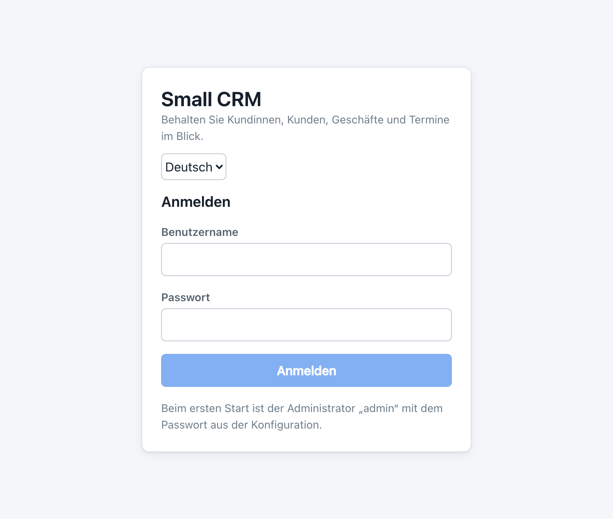
Small CRM verlangt sofort ein eigenes Passwort. Das lässt sich nicht überspringen, und das ist Absicht: Das Startpasswort steht in einer Konfigurationsdatei, die möglicherweise auch andere lesen können.
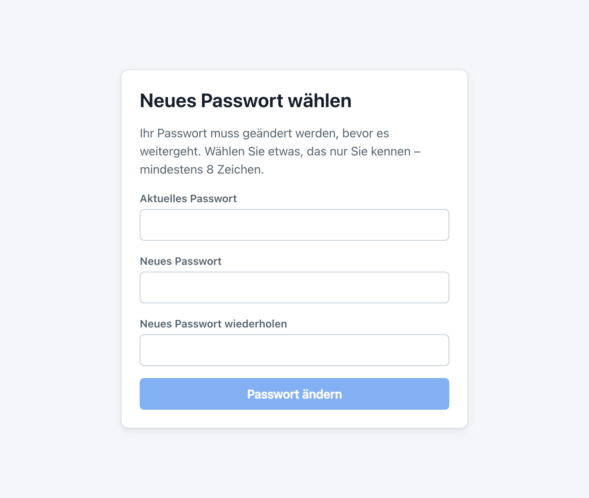
Ein anderer Administrator kann Ihnen unter „Benutzer“ ein neues setzen. Sind Sie der einzige Administrator, wenden Sie sich an die Person, die Small CRM installiert hat.
2. Aufbau der Oberfläche
Jeder Bildschirm hat denselben Rahmen:
- Oben die Leiste mit dem Namen der Anwendung, der Sprache, der angemeldeten Person und der Schaltfläche Abmelden.
- Links das Hauptmenü. Benutzer und Sicherungen erscheinen nur, wenn Sie Administrator sind.
- Der Rest ist der Bildschirm, auf dem Sie gerade sind.
Drei Dinge gelten überall. Die blaue Schaltfläche ist die, die speichert. Alles, was löscht, ist rot umrandet und fragt immer nach. Und nichts wird gespeichert, bevor Sie auf Speichern drücken — Abbrechen verwirft die Eingabe.
3. Die Übersicht
Die Übersicht sehen Sie direkt nach dem Anmelden. Sie soll eine Frage beantworten: Was braucht mich heute?
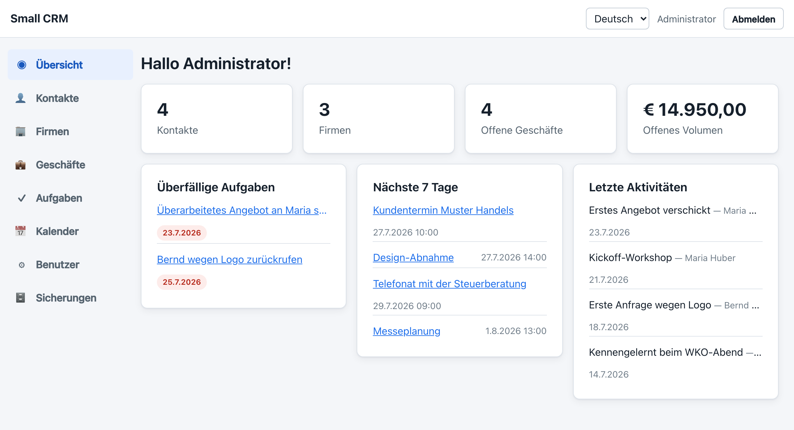
| Bereich | Zeigt |
|---|---|
| Die vier Kacheln | Wie viele Kontakte und Firmen Sie haben, wie viele Geschäfte offen sind und was sie zusammen wert sind. Jede Kachel führt zum passenden Bildschirm. |
| Überfällige Aufgaben | Alles, dessen Fälligkeit vorbei ist und was noch nicht erledigt ist. Das rote Datum zeigt, wie lange es schon wartet. |
| Heute fällig | Aufgaben mit heutigem Datum, damit sie nicht überfällig werden. |
| Nächste 7 Tage | Ihre Termine der kommenden Woche. |
| Letzte Aktivitäten | Was Sie zuletzt erfasst haben: Anrufe, E-Mails, Besprechungen und Notizen. |
Wenn nichts überfällig und nichts für heute fällig ist, verschwinden diese beiden Felder und stattdessen erscheint eine grüne Zeile. Eine leere Übersicht ist eine gute Nachricht.
4. Kontakte
Ein Kontakt ist eine Person. Kontakte sind der Mittelpunkt von Small CRM: Geschäfte, Aufgaben, Termine und erfasste Aktivitäten hängen an ihnen.
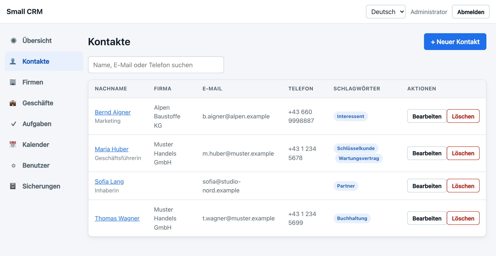
Jemanden anlegen
- Auf + Neuer Kontakt drücken.
- Vor- und Nachname sind Pflicht, alles andere ist freiwillig.
- Eine Firma auswählen, falls die Person für eine arbeitet. Steht sie noch nicht in der Liste, legen Sie sie zuerst unter „Firmen“ an.
- Auf Speichern drücken.
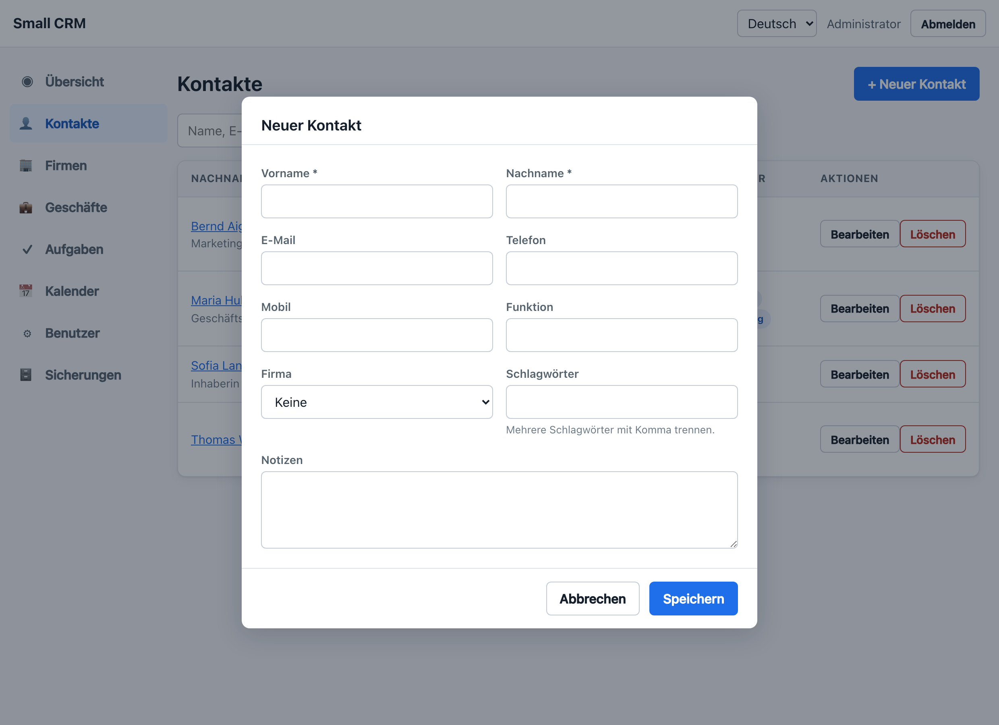
Schlagwörter sind Ihre eigenen Etiketten — Schlüsselkunde, Interessent, zahlt spät, was immer Ihnen hilft. Mehrere durch Komma trennen. Sie erscheinen in der Liste, damit Sie eine Gruppe auf einen Blick erkennen.
Suchen
Das Suchfeld über der Liste durchsucht Namen, E-Mail-Adressen und Telefonnummern. Tippen Sie ein paar Buchstaben, und die Liste wird enger; leeren Sie das Feld, um wieder alle zu sehen.
Ein Kontakt im Detail
Ein Klick auf den Namen öffnet die Seite dieser Person. Dort steht alles zusammen, was Sie über sie wissen.
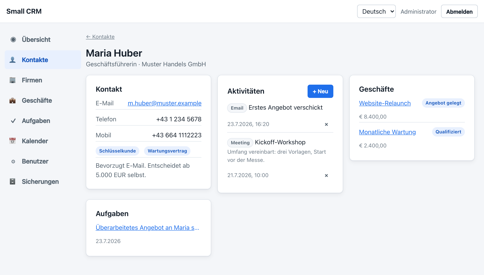
Der Bereich Aktivitäten ist das Tagebuch Ihrer Beziehung. Auf + Neu drücken, auswählen, ob es ein Anruf, eine E-Mail, eine Besprechung oder nur eine Notiz war, einen Betreff vergeben und so viel dazuschreiben, wie Sie möchten. Beim nächsten Anruf sehen Sie, was zuletzt vereinbart wurde.
Eine Aktivität lässt sich nicht in der Zukunft erfassen — das ist fast immer ein Tippfehler. Für Kommendes ist der Kalender da.
Einen Kontakt löschen
Wird eine Person gelöscht, verschwinden auch ihre Aktivitäten, denn eine Aktivität ohne Person ergibt keinen Sinn. Geschäfte, Aufgaben und Termine bleiben erhalten und verlieren nur die Zuordnung. Sie werden gefragt, und die Rückfrage nennt den Namen.
5. Firmen
Eine Firma ist eine Organisation. Nützlich, wenn Sie mit mehreren Personen desselben Unternehmens zu tun haben oder Rechnungsadresse und UID-Nummer an einem Ort brauchen.
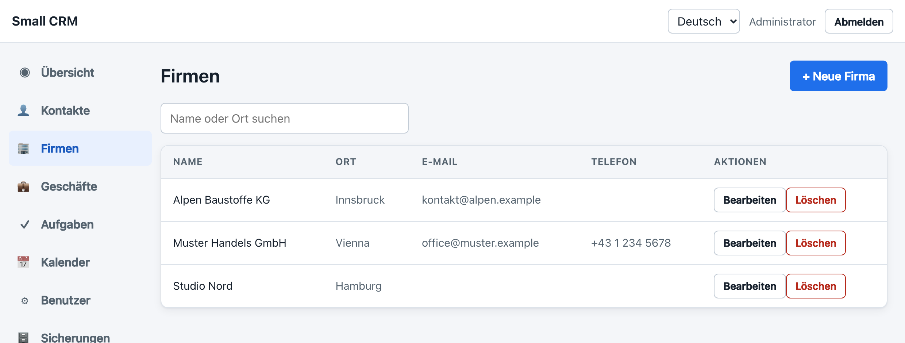
Sie müssen Firmen nicht verwenden. Ein Kontakt ohne Firma funktioniert genauso gut, was bei Ein-Personen-Kunden praktisch ist.
Kontakte und Geschäfte, die zu ihr gehörten, bleiben unverändert bestehen und verlieren nur die Zuordnung. Es verschwindet nichts unbemerkt.
6. Geschäfte
Ein Geschäft ist eine Arbeit, für die Sie bezahlt werden möchten. Der Bildschirm zeigt eine Spalte je Phase, damit Sie auf einen Blick sehen, was wo steht.
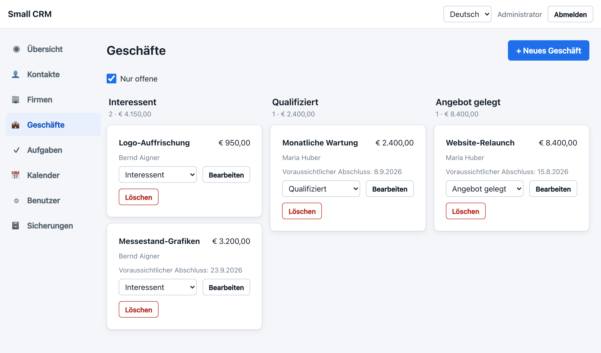
| Phase | Bedeutet |
|---|---|
| Interessent | Jemand hat Interesse gezeigt. Zugesagt ist nichts. |
| Qualifiziert | Sie haben gesprochen, es ist ernst gemeint und leistbar. |
| Angebot gelegt | Ihr Angebot liegt dort, Sie warten. |
| Gewonnen | Zusage. |
| Verloren | Absage, oder es ist endgültig still geworden. |
Zum Verschieben verwenden Sie das Auswahlfeld auf der Karte und wählen die neue Phase. Es wird nichts gezogen: Ein Auswahlfeld sagt genau, wohin die Karte geht, und funktioniert auch am Touchscreen.
Nur offene ist voreingestellt und blendet gewonnene und verlorene Geschäfte aus, damit die Pipeline nur zeigt, woran noch zu arbeiten ist. Haken entfernen, um alles zu sehen, auch die Historie.
7. Aufgaben
Aufgaben sind die kleinen Zusagen, die man leicht vergisst: Angebot schicken, Rechnung urgieren, Donnerstag zurückrufen.
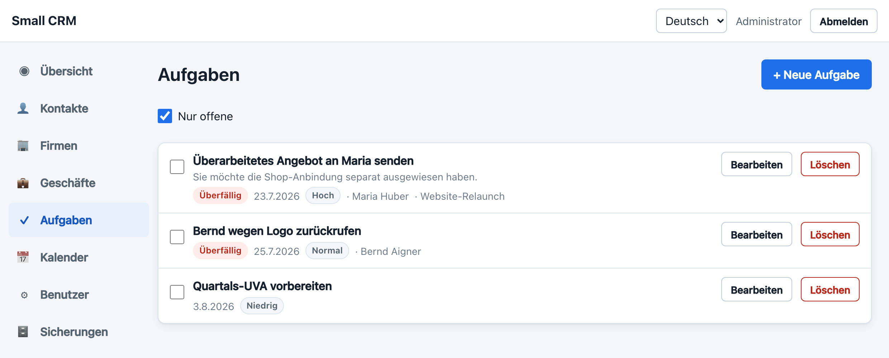
- Das Kästchen links hakt eine Aufgabe ab. Sie verschwindet sofort, weil Nur offene aktiv ist.
- Nur offene abwählen zeigt Erledigtes und erlaubt, eine Aufgabe wieder zu öffnen, falls Sie zu schnell waren.
- Eine Aufgabe mit Kontakt oder Geschäft verknüpfen — sie erscheint dann auch auf der Seite dieses Kontakts.
- Aufgaben ohne Fälligkeit stehen unten. Sie sind für „irgendwann“, nicht für heute.
8. Kalender
Der Kalender ist eine einfache Agenda: Ihre Termine nach Tagen gruppiert, die frühesten zuerst. Mit den Schaltflächen oben blicken Sie 7, 30 oder 90 Tage voraus.
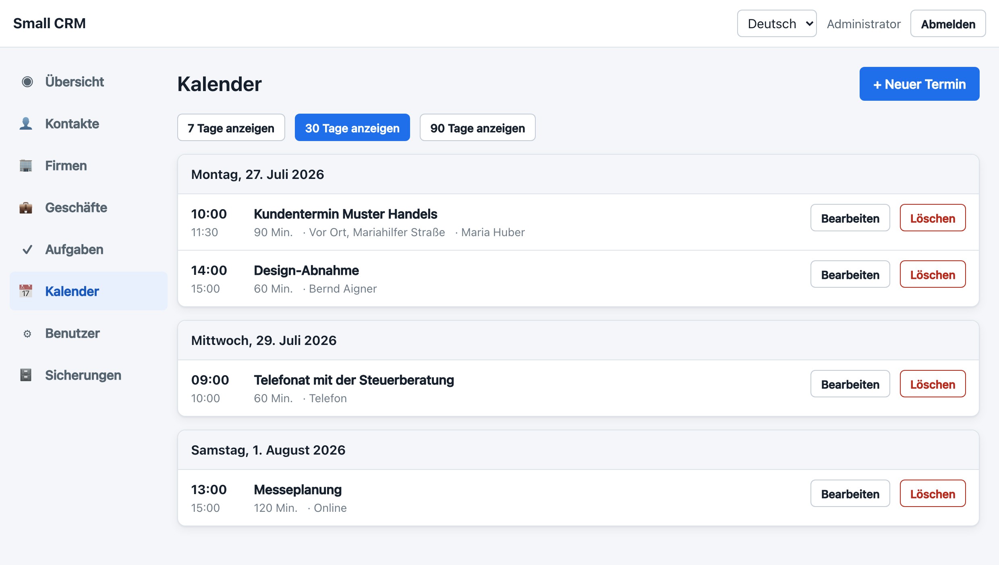
Die Doppelbuchungs-Prüfung
Während Sie einen Termin eintragen, prüft Small CRM die Zeit gegen Ihren Kalender und sagt Ihnen Bescheid, bevor Sie speichern. Eine grüne Zeile heißt: frei. Ein gelber Kasten heißt: Überschneidung — und nennt, womit.
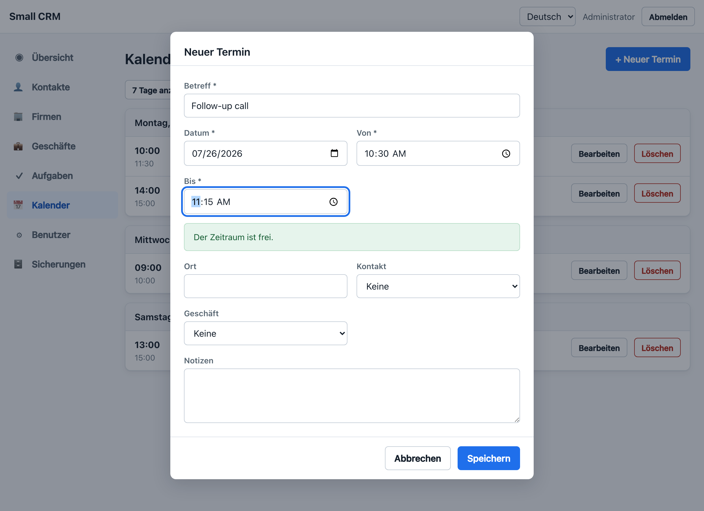
Wenn Sie trotzdem speichern, verweigert Small CRM das und erklärt, warum. Dann haben Sie zwei Möglichkeiten: die Zeit ändern, oder Trotzdem speichern drücken und beides parallel eintragen. Diese Schaltfläche erscheint erst nach der Verweigerung — eine Doppelbuchung ist damit immer eine Entscheidung und kein Versehen.
Ein Termin, der um 10:00 endet, und einer, der um 10:00 beginnt, überschneiden sich nicht. Gemeldet werden nur echte Überschneidungen.
Geprüft wird nur Ihr Kalender. Hat eine Kollegin zur selben Zeit etwas, ist das ihre Sache, und Sie werden nicht gewarnt.
9. Sprache umstellen
Small CRM spricht Deutsch und Englisch. Das Auswahlfeld in der oberen Leiste schaltet sofort um — ohne Neuladen, und ohne dass Sie verlieren, woran Sie gerade sind.
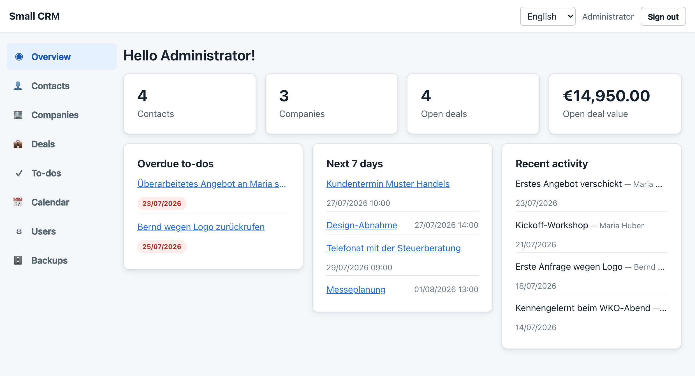
Ihre Wahl wird auf diesem Rechner gemerkt und gilt auch für Fehlermeldungen, nicht nur für die Beschriftungen. Das Datumsformat wechselt (25.7.2026 gegenüber 25/07/2026), die Beträge ebenso (€ 1.234,50 gegenüber €1,234.50).
Wenn Sie ein Datums- oder Zeitfeld anklicken, richtet sich das Auswahlfenster des Browsers nach der Sprache Ihres Rechners, nicht nach der hier gewählten. Das ist Browser-Verhalten und lässt sich aus Small CRM heraus nicht ändern.
10. Benutzer
Administratoren können weiteren Personen Zugang geben — einer Assistenz, einem Partner, der Buchhaltung. Alle teilen sich dieselben Daten, es gibt keine privaten Kontakte.
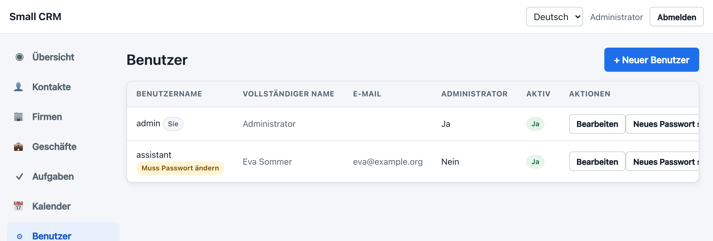
- Auf + Neuer Benutzer drücken.
- Benutzername und Anfangspasswort vergeben und der Person beides mitteilen.
- Administrator nur ankreuzen, wenn sie auch Benutzer und Sicherungen verwalten soll.
Die neue Person muss dieses Anfangspasswort bei der ersten Anmeldung ersetzen, damit es nie zum echten wird. Neues Passwort setzen macht dasselbe noch einmal, falls sich jemand ausgesperrt hat.
Wer das Unternehmen verlässt, sollte auf inaktiv gesetzt und nicht gelöscht werden: Die Person kann Small CRM nicht mehr benutzen, ihre Einträge behalten aber ihren Namen.
Small CRM verweigert das Löschen und Deaktivieren des eigenen Kontos und das Entfernen des letzten Administrators. Es gibt immer einen Weg zurück hinein.
11. Sicherungen
Small CRM sichert sich selbst. Bei jeder Änderung wird der gesamte Datenbestand in eine
XML-Datei im Ordner backup neben der Anwendung geschrieben. Änderungen
kurz hintereinander landen in einer Datei, damit ein arbeitsreicher Nachmittag nicht
Hunderte Kopien hinterlässt.
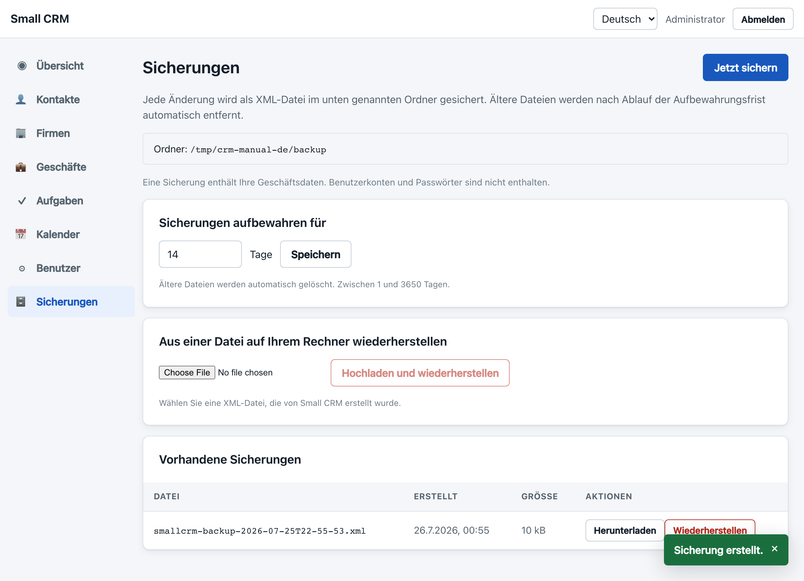
| Was | Tut |
|---|---|
| Jetzt sichern | Schreibt sofort eine Datei. Praktisch, bevor Sie etwas Riskantes versuchen. |
| Aufbewahren für … Tage | Wie lange Dateien bleiben. Anfangs vierzehn Tage. Älteres wird automatisch entfernt. |
| Herunterladen | Speichert die Datei, wohin Sie möchten — USB-Stick, anderer Rechner, Cloud-Speicher. |
| Wiederherstellen | Spielt die Daten aus dieser Datei zurück und ersetzt den aktuellen Stand. |
| Hochladen und wiederherstellen | Dasselbe, aus einer anderswo gespeicherten Datei. |
Wiederherstellen
Sämtliche Kontakte, Firmen, Geschäfte, Aktivitäten, Aufgaben und Termine werden gelöscht und durch den Inhalt der Datei ersetzt. Was nach dieser Sicherung erfasst wurde, ist weg. Benutzerkonten bleiben unverändert.
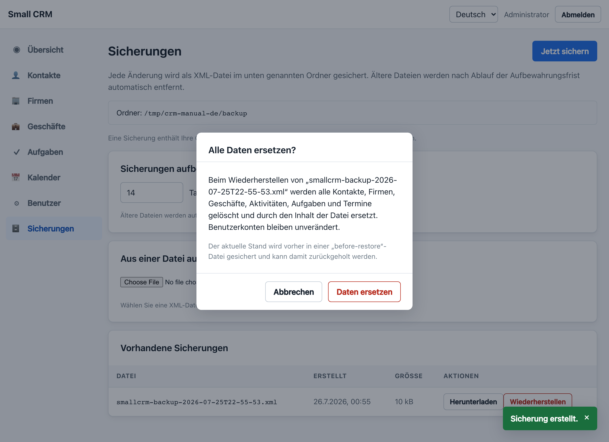
Bevor etwas ersetzt wird, sichert Small CRM den aktuellen Stand in eine Datei, die mit
before-restore- beginnt. Haben Sie also die falsche Datei erwischt, stellen
Sie einfach diese wieder her und sind zurück am Ausgangspunkt. Sie steht oben in der
Liste mit gelber Markierung.
Benutzerkonten und Passwörter bleiben bewusst außen vor, damit eine Sicherungsdatei an die Steuerberatung gehen kann, ohne Zugangsdaten preiszugeben. Nach einer Wiederherstellung auf einer frischen Installation haben Sie also Ihre Daten, aber keine Benutzer, und bei den Einträgen steht nicht, wer sie angelegt hat.
Der Sicherungsordner liegt neben Ihrer Datenbank auf demselben Rechner. Das schützt vor versehentlichem Löschen, nicht vor einem verlorenen, gestohlenen oder defekten Gerät. Laden Sie hin und wieder eine Sicherung herunter und bewahren Sie sie woanders auf.
12. Häufige Fragen
Wo liegen meine Daten?
In einer einzigen Datei namens smallcrm.mv.db im Ordner data
neben der Anwendung, dazu die XML-Dateien in backup. Kopieren Sie diese
beiden Ordner, und Sie haben alles kopiert.
Kann ich das am Handy verwenden?
Die Bildschirme ordnen sich für kleine Displays um, das Menü klappt hinter der Schaltfläche ☰ zusammen. Zum Nachschlagen taugt das gut. Längeres Erfassen ist am Rechner angenehmer.
Ich habe versehentlich etwas gelöscht.
Es gibt keine Rückgängig-Schaltfläche, aber mit ziemlicher Sicherheit eine Sicherung von wenigen Minuten davor. Gehen Sie auf „Sicherungen“, suchen Sie die Datei von vor dem Missgeschick und stellen Sie sie wieder her — im Bewusstsein, dass alles seither Erfasste ebenfalls verschwindet. Im Zweifel vorher die neueste Sicherung herunterladen, dann haben Sie beide Stände.
Wir möchten zu zweit gleichzeitig arbeiten.
Das geht. Alle sehen dieselben Kontakte, Geschäfte und Aufgaben. Zu wissen ist nur: Bearbeiten zwei Personen im selben Moment denselben Eintrag, gewinnt kommentarlos, wer zuletzt speichert.
Verlässt irgendetwas meinen Rechner?
Nein. Small CRM schickt keine Daten irgendwohin, hat keinen Cloud-Teil und braucht zum Laufen keine Internetverbindung.
Kann ich mit Google Kalender synchronisieren?
Noch nicht. Termine werden aber bereits mit den Feldern gespeichert, die eine solche Synchronisation braucht — heute erfasste Termine werden also übernommen, sobald es soweit ist.